Переклади · журнал «ДентАрт» 2016 №1
Тріада бруксизму
TRIAD OF BRUXISM
Бруксизм — патологія, що характеризується денною і нічною парафункціональною активністю, яка проявляється надмірним стисканням щелеп, скреготом і стиранням зубів. І хоча ця патологія досить поширена у повсякденній практиці лікаря-стоматолога, все ж залишається низка дискусійних питань і протиріч щодо патогенезу і відповідного алгоритму лікування. По-перше, не до кінця вирішене питання статистики: скільки ж людей насправді страждає бруксизмом? Цифри варіюють від 5% до 95% усього населення. Багато стоматологів визначає ступінь бруксизму за рівнем стирання зубів, однак цей показник лише частково демонструє зміни зубощелепного апарату. Інші ж клініцисти асоціюють бруксизм лише з так званим бруксизмом сплячих, який проявляється стисканням щелеп і стиранням зубів у зв'язку з порушенням фізіологічного процесу сну. Питання патофізіології бруксизму сплячих залишається відкритим, а дослідники вказують на порушення нейрохімічного балансу організму, стану вегетативної системи і диссомнію як на можливі причини, що провокують патологію. Стаття присвячена аналізу бруксизму сплячих, оскільки саме ця форма патології не лише викликає руйнування структури зубів, але й компрометує загальний стан здоров'я. Крім того, автор детально проаналізував так звану тріаду: бруксизм сплячих як патологія, порушення сну і шлунково-стравохідний рефлюкс як патофізіологічні чинники.
Стирання зубів
Стирання зубів (патологічна стертість), згідно з даними літератури, визначається як втрата структури зубних тканин, яка класифікується на атрицію, абразію, ерозію або комбінацію цих факторів. Для бруксизму сплячих, крім іншого, характерні підвищена рухливість зубів, гіперчутливість при дії температурних подразників, а також можливі переломи коронок. Хоча у сплячих бруксистів і здорових людей рівні стертості зубів значно відрізняються, питання впливу атриції антагоністами залишається дискусійним. Дослідники припускають, що стирання більше пов'язане з фактором ерозії, ніж з фактором атриції. Комбінація цих умов у структурі тріади бруксизму провокує ще більший рівень стертості твердих тканин зубів у сплячих бруксистів (фото 1). Процес стирання зубів належним чином описано в розділах трибології — науки про взаємодію поверхонь, що перебувають у відносному русі і контактують через проміжний лубрикант або ж за допомогою тертя і зносу. Зуби, розміщені навпроти один одного, піддаються ефекту складних трибологічних взаємодій. Тертя виникає в результаті руху контактуючих поверхонь. Оскільки ідеально гладких поверхонь не існує, навіть у випадках легкого навантаження відбувається невелика втрата зубних тканин у період їх контакту. Коли ж між нешорсткими поверхнями міститься проміжний лубрикант, коефіцієнт тертя значно зменшується. Тому згідно з цим принципом трибології, зменшення кількості ротової рідини (яка відіграє роль лубриканта) призводить до збільшення коефіцієнта тертя і таким чином провокує прогресуюче стирання поверхні зубів. Крім того, фактори, які підвищують шорсткість поверхні (наприклад, дія ерозії), також значно збільшують ступінь зносу структури твердих тканин (фото 2).
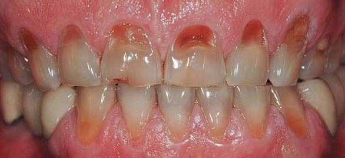
Фото 1. Класична картина бруксизму: латеральна стертість зубів, ураження твердих тканин зі щічного боку через ерозію і абразію, в анамнезі — порушення сну.
Інтраоральний лубрикант більшою мірою представлений слиною, яка також змащує ділянку стравоходу, впливає на буферні характеристики ротової порожнини і зменшує ризик виникнення аспірації. Слиновиділення відбувається відповідно до характеру циркадних циклів організму людини і значно зменшується нічної пори. Під час сну функція ковтання є епізодичною, і проміжки часу без проковтування слини досить тривалі: удень людина ковтає до 25-60 разів на годину, в той час як за всю ніч — не більше 10 разів. Слиновиділення і буферна ємність слини є індивідуальними параметрами, а їх роль у процесі стирання поверхні зубів досі активно вивчається. Ковтання майже завжди пов'язане з мікропорушеннями у фізіологічному процесі сну, а точніше, в його легкої стадії. Тому очевидно, що навіть мікропорушення сну мають досить великий вплив на виникнення і патогенез бруксизму сплячих. Зниження рівня лубриканта, ерозивне тертя поверхонь і тривалість контакту між зубами-антагоністами відіграють ключову роль у трибології стирання зубів у сплячих бруксистів. У той же час сила парафункціонального впливу, виявляється, має далеко менше значення, ніж вважалося раніше. Тривалий час лікарі при вивченні бруксизму спиралися на той факт, що у пацієнтів з цією нічною патологією сила стискання зубів у 6 разів перевищує аналогічний показник у людей з повністю здоровим сном. Цим фактом також пояснювалося те, чому зуби так сильно стираються, а реставрації постійно сколюються.
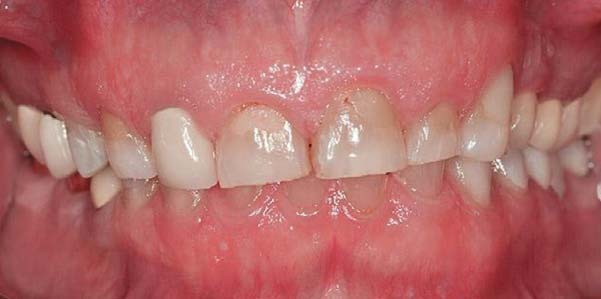
Фото 2. Асиметричне зношування зубів при тріаді бруксизму: підвищена стертість спровокована дефіцитом лубриканта (слини) через побічну дію лікарських препаратів, шорсткість поверхні викликана ерозивною дією рефлюксу.
Але виявляється, що реальні дані суперечать цій гіпотезі. Gibbs і колеги дійшли думки, що сила стискання у деяких бруксистів-клінчерів може у шість разів перевищувати силу стискання у людей без цієї патології [15]. Але при цьому в ході аналізу було виявлено, що у більшості наведених раніше досліджень оцінка сили стискання бруксистів робилася лише в денну пору, і ніхто не вивчав величину сил, що виникають під час сну. Також у ході подібних досліджень не було сформовано конкретних експериментальних груп і груп порівняння, які б відрізнялися лише наявністю/відсутністю патології. Насправді ж у ході дослідження, проведеного Gibbs, було встановлено, що лише у одного пацієнта-бруксиста вдалося зареєструвати силу укусу, яка в шість разів перевищувала звичайну, а при аналізі м'язової активності під час сну було встановлено, що м'язи, які піднімають нижню щелепу, лише в рідкісних випадках (а в більшості випадків і зовсім ніколи) досягають своєї точки екстремуму, тобто можливого максимуму дії. Насправді ж рівні м'язової активності під час сну у бруксистів не перевищують і половини показника максимальної неусвідомленої фізіологічної взаємодії, і лише у 66% випадків рівень функціонування м'язів уночі перебуває на рівні сили, рівної або більшої, ніж та, що генерується під час акту жування. І хоча пацієнти з великим розміром щелепних м'язів справді можуть генерувати велику силу стискання при тому ж рівні м'язової активності, але навіть у подібних випадках рівень діючих сил перебуває в межах добової норми і вже точно не перевищує її у шість чи більше разів.
Фази сну і пробудження
Адекватний сон важливий для фізичного відновлення, поновлення біохімічних систем, консолідації пам'яті та емоційної регуляції. Типовий цикл сну становить від 90 до 110 хвилин, а кількість циклів за ніч коливається від 3 до 5. Сон складається з двох різних станів: без швидкого руху очей, скорочено неШРО-фаза (неREM-фаза, спокійний сон) і з швидким рухом очей, скорочено ШРО-фаза (REM-фаза, фаза, що характеризується швидким рухом очей, активний сон). НеШРО-фаза характеризується чотирма стадіями: 1-2 фази — легкий сон, 3-4 фази — глибокий сон. У першій третині загального циклу сну 3-4 неШРО стадії найдовші, вони зменшуються або взагалі зникають в останній третині циклу, в якій виникає ШРО-фаза. Сновидіння можуть виникнути на будь-якій стадії сну, але під час ШРО-фази вони виникають значно частіше і мають яскравіший характер.
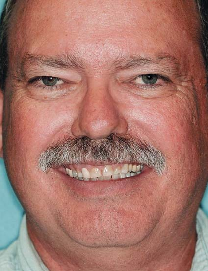
Фото 3. При діагностиці бруксизму, викликаного дією апное сну і дією кислот, клініцисти завжди повинні враховувати і можливі чинники, які призводять до патології: вік за 40 років, чоловіча стать, надмірна вага, розмір шиї > 44 см.
Мікропрокидання є зрушенням уві сні, яке відбувається під час глибокого сну. У ці 3-10 секунд виникає підвищена активність головного мозку, збільшується частота серцевих скорочень і підвищується тонус м'язів. Ці процеси відбуваються від 8 до 15 разів на годину. Бруксизм є проявом вторинних ортомоторних мікропрокидань. У 86% феномен бруксизму виникає на стадії неШРО-фази сну і під час фізіологічних мікропрокидань. Значно менший відсоток патології маніфестується під час ШРО-фази сну, однак у бруксистів з важкою формою патології кількість епізодів парафункції значно зростає під час сну, в тому числі і під час його активної фази.
Порушення сну
Респіраторні порушення під час сну поділяються на три категорії: хропіння, синдром опору верхніх дихальних шляхів (СОВДШ) і синдром обструктивного апное-гіпопное сну. Хропіння визначається специфічним звуком, який виникає у верхніх дихальних шляхах через вібрацію м'яких тканин, яка викликана турбулентністю повітря. Хропіння спостерігається приблизно у 40% чоловіків і у 24% жінок, поширеність серед дітей не перевищує 10%. Хропіння є одним з факторів ризику обструктивного апное сну. Лікарська консультація обов'язкова у випадках, коли хропіння супроводжується сонливістю денної пори, безсонням, порушенням сну або гіпертонією, а також бажана перед виготовленням внутрішньоротових апаратів з метою лікування цієї патології.
Синдром опору верхніх дихальних шляхів за рахунок необхідності реалізації великих зусиль для виконання вдиху підвищує кількість мікропрокидань і, окрім іншого, призводить до звуження глотки. Останній фактор зменшує насиченість киснем до 4%. Патологія характеризується періодичним частковим колапсом верхніх дихальних шляхів під час сну, головним болем, порушеннями в ділянці скронево-нижньощелепного суглоба і асоціюється з бруксизмом. СОВДШ вважається проміжною формою розладу між хропінням і синдромом обструктивного апное-гіпопное сну. Апное характеризується повторюваними періодами відсутності вентиляції із зупинкою дихання до 10 секунд, при цьому насиченість киснем, як правило, перевищує 4%. Апное під час сну може мати обструктивний характер (найбільш поширений) в результаті закупорювання верхніх дихальних шляхів або ж розвиватися внаслідок порушення рухів грудної клітки через відсутність адекватної нервової регуляції. Таке апное іменується центральним. Бувають випадки, коли у одного пацієнта зустрічаються два типи апное одночасно. Гіпопное характеризується зменшенням обсягу повітряного потоку більш ніж на 50% або ж до 30%, коли рівень десатурації кисню перевищує 3%. Ступінь обструктивного апное сну визначається кількістю випадків апное/гіпопное за одну годину. Індекс апное/гіпопное (ІАГ) класифікує осіб з 5-15 випадками за годину сну як таких, які мають легку форму патології; від 15 до 30 — середню форму патології і понад 30 — як тяжку. Тяжкість патології апное сну також визначають за комбінацією симптомів, які складаються з показників ІАГ, сонливості в денну пору і відсотка насиченості киснем. Факторами ризику обструктивного апное сну є чоловіча стать, надмірна вага, вік після 40, великий розмір шиї, великий розмір мигдалин, сімейний анамнез захворювання (фото 3). Згідно з оцінками, 1 з 5 дорослих має принаймні легку форму патології, а 1 з 15 — середню. На відміну від бруксизму, поширеність обструктивного апное сну збільшується з віком і може виникати приблизно у 70% чоловіків і 56% жінок у віці понад 65 років, тобто в три рази частіше, ніж у людей середнього віку. Крім того, обструктивне апное сну є фактором ризику виникнення гіпертонії, серцево-судинних захворювань, денної сонливості та деяких інших захворювань.
Бруксизм сплячих
Слід розуміти, що сплячий бруксист — це не те ж саме, що людина, яка іноді бруксує під час сну. За визначенням, у справжніх бруксистів спостерігається понад 4 епізоди парафункції за годину сну, понад 25 позивів на бруксування за той же час і принаймні один епізод виникнення своєрідного звуку за ніч. Бруксизм сплячих більш характерний для дітей, і з часом його прояви зменшуються: до 30% випадків реєструють у віці від 5 до 6 років, до 13% — у віці від 18 до 29 років і лише до 3% — у пацієнтів, старших 60 років. На відміну від денного бруксизму, патологія сплячих жодним чином не пов'язана з теорією стресу, що провокує виникнення парафункції. Крім того, для бруксизму сплячих характерна мала мінливість кількості проявів парафункції і позивів за годину під час сну протягом довгих місяців і навіть років. При помірній та тяжкій формах бруксизму сплячих скреготіння зубами спостерігається майже щоночі.
Епізоди парафункції сплячих пов'язані з порушеннями архітектури сну. Kato і колеги вивчали вплив навмисно спровокованих мікропрокидань під час сну у бруксистів і представників контрольної групи [10]. У досліджуваній групі через спровоковані мікропрокидання скрегіт зубів виникав у 71% випадків. Цікаво, що така реакція спостерігалася лише у пацієнтів з бруксизмом, і ніколи у здорових пацієнтів, що вказує на їхню здатність адаптуватися до мікропрокидань під час сну. Таким чином, вдалося встановити: все, що викликає збільшення кількості мікропрокидань, провокує ще більшу можливість виникнення епізодів бруксизму, скреготу зубів і втрати їх структури.
Дихальні шляхи
Дослідники встановили, що збільшення епізодів апное під час сну асоціюється зі збільшенням епізодів бруксизму. З огляду на зв'язок між мікропрокиданнями та бруксизмом сплячих, можна стверджувати, що частота епізодів бруксизму зростає паралельно частоті епізодів мікропрокидань, викликаних фактором апное. Принаймні третина пацієнтів з бруксизмом має також порушення дихальної функції під час сну, що проявляється епізодами апное, періодичними рухами ніг і головним болем. Обструктивне апное сну також характерне для 30% пацієнтів з порушеннями скронево-нижньощелепного суглоба, а понад 50% пацієнтів з обструктивним синдромом верхніх дихальних шляхів скаржаться також і на бруксизм. Перспективні дослідження стверджують, що, очевидно, епізоди бруксизму безпосередньо пов'язані з фактором апное сну. І хоча прямого причинно-наслідкового зв'язку встановити поки що не вдалося, але синдром обструктивного апное все-таки визначають як найбільш впливовий фактор ризику, що провокує виникнення парафункції.
Більшість епізодів бруксизму сплячих відбувається в положенні лежачи на спині, таким чином, вони можуть бути пов'язані або зі зменшенням проходу дихальних шляхів, або зі збільшенням опору в них. Під час відновлення вентиляції після апное спільна активація м'язів, що піднімають і опускають щелепу, призводить до розширення верхніх дихальних шляхів. Це дозволяє підвищити обсяг потоку повітря при вдиху і зменшує опірність верхніх дихальних шляхів. Встановлено, що 99% ритмічної діяльності жувальних м'язів пов'язані зі змінами амплітуди і частоти дихальних рухів. Таким чином, вдається відповісти й на інше питання — щодо змін бічних контурів язика у сплячих бруксистов: пацієнт, намагаючись забезпечити прохідність дихальних шляхів, активізує м'язи язика і позиціонує язик прямо навпроти зубів, щоб звільнити простір для надходження повітря в гортань (фото 4). Велика поширеність бруксизму сплячих характерна для 5-6-річних дітей і поступово знижується з віком. Гіпертрофія аденоїдних мигдалин у дитячому віці пояснює обструкцію дихальних шляхів і таким чином обґрунтовує і велику поширеність бруксизму. Оскільки прохідність дихальних шляхів поліпшується з віком, рівень поширеності бруксизму в загальній популяції знижується, але в розрізі своєї тріади він продовжує прогресувати. Тобто, якщо бруксизм є рефлексивним механізмом для поліпшення або захисту дихальних шляхів, то частіші епізоди бруксизму знижують негативний вплив апное.
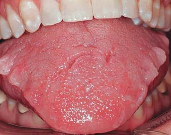
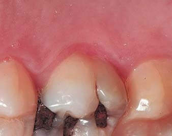
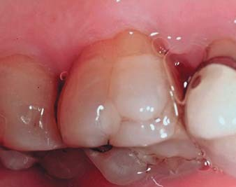
Фото 4. Зміни бічних поверхонь язика, викликані неусвідомленою його диспозицією до язичних поверхонь зубів з метою забезпечення прохідності дихальних шляхів. Фото 5. Шорсткості піднебінної поверхні молярів верхньої щелепи можуть бути першими ознаками рефлюксу. Фото 6. Ознаки прогресуючої ерозії внаслідок гастроезофагеальної рефлюксної хвороби: ділянки ерозивного ушкодження залежать від положення пацієнта під час сну.
Sjoholm дійшов висновку, що існує обмежена кореляція між бруксуванням і апное, оскільки у пацієнтів з легкою формою апное епізоди бруксизму зустрічалися частіше, ніж у пацієнтів із середньою формою тяжкості апное. Однак якщо бруксизм є захисним рефлексом, лікарі могли б тоді передбачити зниження рівня ризику апное у молодого населення бруксистів, адже агресивний бруксизм у 20-40-річному віці просто є механізмом, що звільняє прохідність дихальних шляхів. У процесі ж старіння у людей слабшають їхні нейрохімічні можливості регуляції бруксування, тому забезпечити прохідність дихальних шляхів під час сну стає все складніше через втрату м'язового тонусу, збільшення ваги і т.д.
Гастроезофагеальна рефлюксна хвороба
Гастроезофагеальна рефлюксна хвороба характеризується потраплянням вмісту шлунка в простір стравоходу. Цією патологією хворіє приблизно 40% американців. Гастроезофагеальна рефлюксна хвороба зазвичай асоціюється з печією або розладом шлунка, хоча у 50% людей, що скаржаться на подразнення в горлі, захриплість чи проблеми з ковтанням, було діагностовано приховану форму гастроезофагеальної рефлюксної хвороби. У пацієнтів з відсутньою симптоматикою порушення сну може бути єдиною ознакою гастроезофагеальної рефлюксної хвороби. При цьому також не слід забувати про диференціальну діагностику з виразковою хворобою, стенокардією і Барреттовим захворюванням стравоходу (яке часто передує аденокарциномі). Деякі з кислотних елементів шлунка можуть досягати порожнини рота. Подібні речовини мають надзвичайно руйнівну кислотність з рН від 1 до 2 (для порівняння нагадаємо, що дієтарні кислоти мають рН понад 3). Найпоширенішою ділянкою ушкодження внаслідок дії кислот є піднебінна поверхня верхніх молярів (фото 5, 6). Рефлюкс переважно виникає у положенні лежачи на спині: спинка язика штовхає кислоти в напрямку молярів верхньої щелепи під час акту ковтання, щоб неусвідомлено мінімізувати дію кислот. Хоча піднебінні поверхні молярів і найбільш схильні до дії кислот у подібних випадках, цілісна картина ушкодження залежить від позиції, яку пацієнт приймає під час сну. Активність язика, пов'язана із забезпеченням прохідності дихальних шляхів і патомеханізмом регургітації, може спровокувати і ушкодження лінгвальних поверхонь нижніх зубів (як при булімії) і навіть досягти зони передніх зубів верхньої щелепи (фото 7). У хворих з гастроезофагеальною рефлюксною хворобою частіше діагностують симптоми ксеростомії та відчуття печії в порожнині рота, а дефіцит слини (як лубриканта) у комбінації з дією кислот, що провокують велику шорсткість поверхні, підвищує ризик фрикційного зносу структури зубів під час епізодів нічного бруксизму.
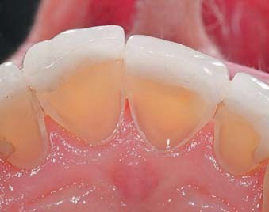
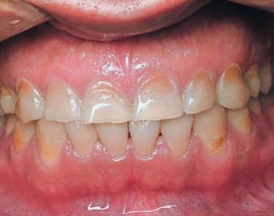
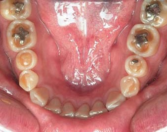
Фото 7. Пацієнти, у яких фронтальна диспозиція язика (з метою забезпечення прохідності дихальних шляхів) комбінується з ознаками гастроезофагеальної рефлюксної хвороби, мають специфічні ушкодження лінгвальних поверхонь зубів, що нагадують булімію, які можуть доходити і до зони різців. Фото 8. Молода людина з ознаками тріади бруксизму: латеральне стирання зубів, ерозивно-абразивне ушкодження їх структури, в анамнезі — помірна форма апное. Фото 9. Широке ерозивне ушкодження зубів. Поліпшення прохідності дихальних шляхів може знизити симптоми гастроезофагеальної рефлюксної хвороби, а купірування гастроезофагеальної рефлюксної хвороби — вплинути на репресування парафункції.
Тріада: бруксизм сплячих, порушення сну і гастроезофагеальна рефлюксна хвороба
Тріада бруксизму в поєднанні з нічною гіпосалівацією або ксеростомією помітно збільшує ризик патологічного стирання зубів та їх ерозивного ушкодження. Тріада бруксизму складається зі скреготу зубів, спровокованого мікропрокиданнями, порушення сну, пов'язаного з дефіцитом прохідності дихальних шляхів, та розладів архітектури сну, викликаних гастроезофагеальною рефлюксною хворобою (фото 8, 9). Хоча прямого причинно-наслідкового зв'язку між цими факторами так і не було встановлено, значна кореляція обґрунтовує необхідність діагностики цих критеріїв у стоматологічних пацієнтів. Бруксизм сплячих тісно асоційований з апное сну. Таким чином, якщо рівень апное можна зменшити, то в результаті отримаємо і зменшення епізодів бруксизму. Oksenberg і Arons виявили, що при безперервному позитивному тиску в дихальних шляхах симптоми апное повністю зникають і залишаються лише незначні ознаки гіпопное. При цьому також зникають усі епізоди бруксизму. Техніка диспозиції нижньої щелепи допомагає подолати симптоматику бруксизму в 50-83% випадків. Варіативність успішності цієї методики, швидше за все, пов'язана із самою методологією техніки, і, звичайно ж, диспозиція щелепи не може забезпечити аналогічно ефективних результатів, подібних до лікування постійним позитивним тиском у просторі дихальних шляхів. Але техніку диспозиції нижньої щелепи можна ефективно використовувати у пацієнтів без дихальних порушень. Статистично значуще зниження (39% і 47%) кількості епізодів бруксизму у сплячих було зафіксовано при протрузії нижньої щелепи на 25% і 75%, відповідно, що доводить ключову значущість прохідності дихальних шляхів для профілактики бруксизму.
Важливо зазначити, що традиційні жувальні стабілізуючі шини можуть мати негативний вплив при лікуванні нічних бруксистів з обструктивним синдромом апное. Проспективне дослідження 10 пацієнтів з легкими і середніми формами тяжкості обструктивного апное із стабілізуючою шиною і без неї встановило такі результати: у шести з десяти пацієнтів значно збільшився індекс апное/гіпопное. Крім того, було встановлено, що у пацієнтів з обструктивним апное, які носили повні знімні протези, прохідність дихальних шляхів значно ліпша у випадках використання протезів уночі в порівнянні з результатами, отриманими при вилученні протезів на ніч з ротової порожнини. У ході досліджень було встановлено, що у пацієнтів із синдромом обструктивного апное поліпшена прохідність дихальних шляхів спостерігається у випадках, коли нижня щелепа перебуває у більш протрузійному положенні. Умови, при яких досягти такої позиції щелепи важко, значно погіршують прохідність дихальних шляхів і збільшують кількість епізодів бруксизму під час сну. Цим можна пояснити рівень зносу поверхонь оклюзійних шин у нічних бруксистів. Було також відзначено, що у пацієнтів з проблемною прохідністю дихальних шляхів та гастроезофагеальною рефлюксною хворобою рівень зносу ортопедичних апаратів значно вищий, незалежно від їх дизайну (фото 10 і 11). Гастроезофагеальна рефлюксна хвороба може бути пов'язана і з іншими елементами тріади.
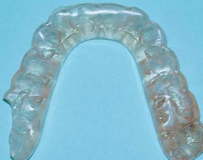
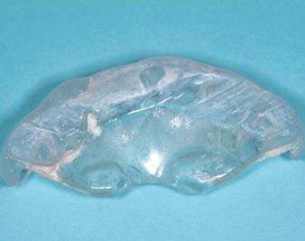
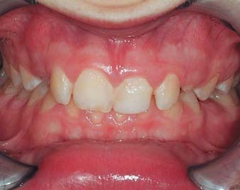
Фото 10. Велика стертість оклюзійної капи. Було припущено, що сліди стертості капи є патогномонічним симптомом прогресування тріади бруксизму. Фото 11. Тривале стирання кап при парафункції не залежить від особливостей їх конструкції. Фото 12. Тріада бруксизму в дитячому віці: ерозивне та атриційне стирання тимчасових зубів, звуження зубних дуг, глибокий прикус II класу. При обстеженні виявлено симптоми гастроезофагеальної рефлюксної хвороби у комбінації зі збільшенням аденоїдів і мигдалин.
Пацієнти з гастроезофагеальною рефлюксною хворобою мали вищі показники індексу апное/гіпопное і коротші періоди другої стадії сну. Дослідження також засвідчили, що тяжчі стадії синдрому обструктивного апное супроводжуються тяжчими стадіями ГЕРХ. Хоча питання залишається спірним, але факт залишається фактом: під час епізоду апное збільшується від'ємний внутрішньогрудний тиск, який може призвести до регургітації шлункових кислот у простір стравоходу. При зменшенні рН стравоходу епізоди бруксування у пацієнтів траплялися значно частіше. Miyawaki вивчав 10 нічних бруксистів з гастроезофагеальною рефлюксною хворобою і 10 пацієнтів контрольної групи без ГЕРХ. Контроль за рН стравоходу провадився навіть під час сну, що дозволило зареєструвати такі дані: при рН стравоходу 4 або нижче починалися епізоди бруксування, які розв'язувалися тонічним імпульсом і актом ковтання. Мабуть, цей рефлекс є спробою буферизації кислотного вмісту шлунка, що потрапив у стравохід. Цікаво, що поріг рН 4 був досягнутий винятково у пацієнтів, які страждають нічним бруксизмом. У групі контролю рН стравоходу не сягав такого низького рівня, щоб спровокувати епізод парафункції.
Інгібітори протонного насоса є групою лікарських засобів, які знижують вироблення шлункової кислоти. Застосування цих препаратів у лікуванні пацієнтів з гастроезофагеальною рефлюксною хворобою знизило частоту епізодів бруксизму в 40% випадків. Іншими препаратами, що купірують гастроезофагеальну рефлюксну хворобу, є Н2-гістамінові блокатори, при прийомі яких у пацієнтів спостерігалося зниження респіраторних порушень, симптомів денної сонливості та інших суміжних порушень. При цьому, однак, не зменшилися показники індексу апное/гіпопное. Зниження внутрішньогрудинного тиску шляхом забезпечення позитивного безперервного тиску в дихальних шляхах зменшує клінічні ознаки гастроезофагеальної рефлюксної хвороби у пацієнтів із симптомами бруксування і без них. Дослідження з використанням апаратів для переміщення нижньої щелепи мали схожі результати, що ще раз підтверджує їх позитивну дію на прохідність дихальних шляхів.
Діагностика тріади бруксизму у пацієнтів
Стоматолог повинен уміти діагностувати ознаки бруксизма у пацієнта будь-якої вікової категорії. Рання діагностика допоможе забезпечити нормальний розвиток організму, поліпшити фізичний стан і зменшити рівень стертості зубів. Нижче подаємо деякі відмінні аспекти діагностики парафункції у різних вікових групах.
Дитячий період — 3-12 років
Гіпертрофія аденоїдів і мигдалин провокує порушення сну, в тому числі і синдром обструктивного апное. Ступінь гіпертрофії, що провокує обструкцію, дещо більший для дітей з ожирінням, ніж для дітей без нього. Гастроезофагеальну рефлюксну хворобу можна часто діагностувати у дітей з аденотонзилярною гіпертрофією і обструктивним апное. У дітей п'ятирічного віку з обструктивним апное також спостерігаються характерні відмінності у рості, що викликано індивідуальними характеристиками дисталізації нижньої щелепи, передньої висоти лиця, ступеня ретроінклюзії різців (фото 12).
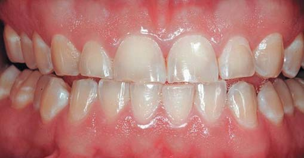
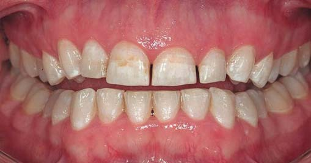
Фото 13. Тріада бруксизму в підлітковому віці: стирання фронтальних зубів у 16-річного пацієнта зі зміною поверхні зубів внаслідок ерозії та абразії. Анамнез свідчить про наявність тріади бруксизму. Фото 14. Тріада бруксизму у молодої дорослої людини: патологічна стертість зубів поширилася із зони фронтальних зубів у зону бічних. Пацієнтка повідомила про проблеми зі сном, які посилилися разом з ознаками ГЕРХ при вагітності.
Підлітковий вік — 13-19 років
Стоматологи зазвичай пояснюють батькам, як більшість дітей переростає бруксизм, коли досягає статевої зрілості, долаючи проблеми, пов'язані з аденоїдами та гіпертрофією мигдалин. У той же час завдяки ортодонтичному лікуванню зона піднебіння розширюється настільки, що забезпечує достатню прохідність верхніх дихальних шляхів. Будь-які ознаки патологічної стертості зубів, швидше за все, пов'язані з порушенням сну, симптомами рефлюксу і бруксизмом як останньою ланкою патофізіологічного механізму (фото 13).
Молодіжний вік — 20-40 років
Патологічна стертість зубів або рецидив ортодонтичного лікування, як правило, вирішуються за допомогою оклюзійної капи. Стирання самої капи є прямою ознакою прогресування тріади бруксизму. Результати аналізу можливих факторів стресу, внутрішнього дискомфорту і напруги через порушення сну теж обов'язково повинні бути взяті до уваги. Ознаки гастроезофагеальної рефлюксної хвороби можна виявити на зубах або в ділянці піднебіння. Бруксизм у подібних випадках може бути захисним рефлексом для забезпечення прохідності дихальних шляхів (фото 14). Існує статистично значущий зв'язок між стертістю молочних молярів та іклів у юності і рівнем стертості всіх зубів у подальшій 20-річній перспективі (фото 15). Для бруксистів з епізодичними порушеннями сну і симптомами рефлюксу дослідники рекомендують використовувати з метою репозиціонування щелепи передню шину, яка може забезпечити досить успішні результати. При цьому слід пам'ятати, що шини, які забезпечують протрузію нижньої щелепи не більше ніж на 40%, гарантують далеко менший ризик оклюзійних порушень, ніж ті, які позиціонують нижню щелепу в більш протрузійному положенні (фото 16, 17). Верхньощелепний ортопедичний апарат забезпечує прохідність дихальних шляхів за рахунок протрузійної позиції нижньої щелепи, але при цьому не є настільки громіздким, як більшість апаратів аналогічногої дії.
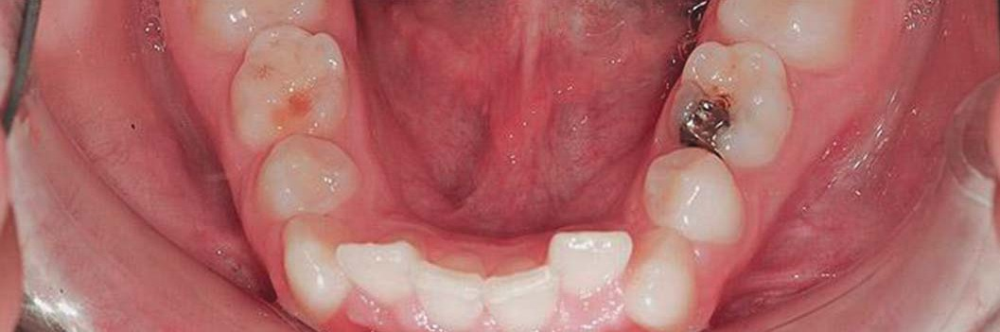
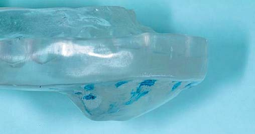
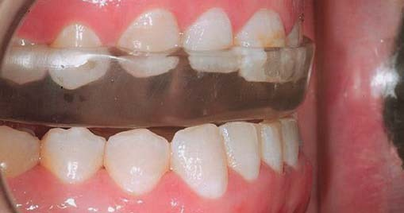
Фото 15. Підвищена стертість тимчасових молярів у пацієнта збільшує ризик виникнення бруксизму в дорослому віці. Звуження зубних дуг, скупченість передніх зубів нижньої щелепи і глибокий прикус провокують проблеми з прохідністю дихальних шляхів. В анамнезі — гастроезофагеальна рефлюксна хвороба у поєднанні з ерозійним зношуванням зубів. Фото 16. Площина ортодонтичної капи демонструє шлях диспозиції фронтальних зубів з центрального положення в переднє. Фото 17. Протрузія щелепи на 40%.
Середній вік — 40-65 років
У цьому віці симптоми бруксизму починають слабшати, однак ризик обструкційного апное зростає. Ознаки атриції зубів у цей період проявляються менше, але ризик ускладнень синдрому апное/гіпопное сну і гастроезофагеальної рефлюксної хвороби неухильно збільшується. Також можуть проявлятися симптоми вікового старіння зубів і пошкодження наявних стоматологічних реставрацій. Купірування дихальних порушень стає складнішим процесом, враховуючи фізичні зміни організму середнього віку (фото 18). Згідно з даними літератури, менеджмент прохідності дихальних шляхів під час сну поліпшує всі фактори тріади бруксизму. Лікування шляхом забезпечення позитивного тиску в просторі дихальних шляхів є золотим стандартом, але для пацієнтів, які не бажають приймати цей алгоритм, можна виготовити ортопедичні апарати для протрузії нижньої щелепи, оскільки їх потенційна дія може зменшити рівень індексу апное/гіпопное, ознаки бруксизму, порушення сну і симптоми гастроезофагеальної рефлюксної хвороби (фото 19, 20).
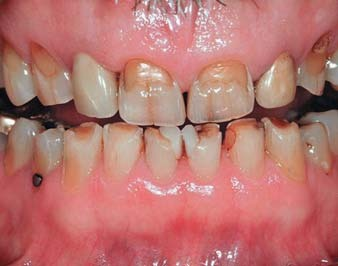
Фото 18. Пацієнт середнього віку: патологічна стертість внаслідок бруксування уві сні та ерозивне ушкодження поверхонь зубів. Лікування гастроезофагеальної рефлюксної хвороби провадилося за допомогою інгібіторів протонної помпи. Пацієнт повідомив про зменшення ознак бруксизму, але симптоми хропіння та апное посилилися. У результаті полісомнографії визначено, що ІАГ дорівнює 34.
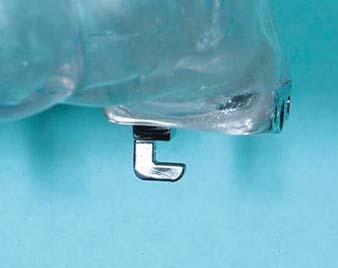
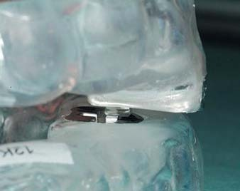
Фото 19. Регульований позиціонер Торнтона 3 (РПТ), зроблений індивідуально для лікування порушень сну. Передній роз'єм дозволяє регулювати прохідність дихальних шляхів. Фото 20. Зафіксована позиція регульованого позиціонера Торнтона.
Зрілий вік — 65 і старші
Більшість пацієнтів зрілого віку має, як правило, помірний ступінь апное під час сну, і більшість медичних аспектів, пов'язаних із загальним станом здоров'я, може бути безпосередньо асоційована саме із синдромом обструктивного апное. Бруксизм як захисний механізм може проявлятися деякими змінами, але за своєю суттю він уже не забезпечує потрібної прохідності дихальних шляхів і компенсаторного зменшення ознак гастроезофагеальної рефлюксної хвороби шляхом активації акту ковтання. Пацієнтам у цьому віці доводиться вирішувати проблему патологічної стертості зубів, яка виникла через хронічну дію провокуючих чинників протягом тривалого часу (фото 21, 22). Комплексна оцінка ознак і симптомів обструктивного апное і полісомнографічне дослідження у цьому віці обов'язкові. Пацієнтів із зубними протезами і порушеннями сну слід мотивувати, щоб не знімали протези на ніч, оскільки тоді ознаки тріади мають менш виражений характер (фото 23, 24).
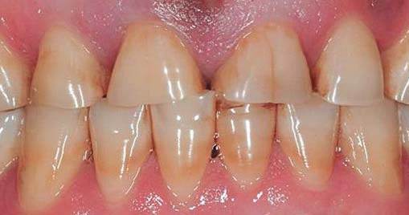
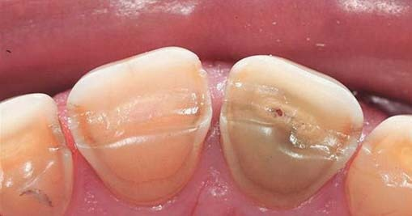
Фото 21. Літній пацієнт з ознаками тріади бруксизму: в анамнезі довготривалі симптоми бруксизму, хропіння, переривчастого сну і ГЕРХ. Результати дослідження сну засвідчують наявність тяжкої форми апное. Фото 22. Вид ріжучого краю в результаті стирання через бруксизм та ерозійние зношування через наявність ГЕРХ.
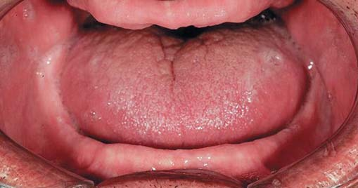
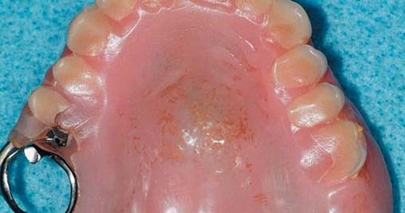
Фото 23. Положення язика у беззубих пацієнтів обмежує прохідність дихальних шляхів (вид з ретрактором). Носіння зубних протезів на ніч допомагає досягти ліпшої прохідності дихальних шляхів. Фото 24. На багатьох зубних протезах можна виявити фасетки стертості, що вказують на наявність тріади бруксизму. Для детальної діагностики слід провести аналіз симптомів бруксизму, порушення сну і ознак ГЕРХ.
Висновки
У ході цього аналізу було встановлено, що хоча більшість стоматологічних пацієнтів і страждає патологічною стертістю зубів, але бруксистами можна назвати лише дуже особливий контингент пацієнтів. Бруксизм сплячих викликаний дією мікропрокидань, які можуть мати як природний характер, так і можуть бути спровоковані порушенням прохідності дихальних шляхів або значним зниженням рН стравоходу. Тріада бруксизму — це одна з концепцій, яка намагається пояснити тісний характер взаємозв'язку між бруксизмом, диханням і ерозивним фактором кислотності. Нічні бруксисти страждають на патологічну стертість зубів за рахунок збільшення тертя поверхонь антагоністів через недостатню кількість лубриканта (слини) і шорсткість поверхонь, викликану дією кислот. Комплексна діагностика таких пацієнтів обов'язкова, щоб у перспективі призначити найефективніший варіант лікування з урахуванням можливості забезпечення позитивного тиску в просторі верхніх дихальних шляхів, протрузії нижньої щелепи за допомогою ортопедичної апаратури і фармацевтичних препаратів, що купірують ознаки гастроезофагеальної рефлюксної хвороби.
Переклад Кіріла Ільдіганова та Ганни Антипович
Література
- De Leeuw R. Orofacial Pain Guidelines for Assessment, Diagnosis, and Management. 4th ed. Chicago, Ill: Quintessence; 2008.
- Lavigne GJ, Montplaisir JY. Restless leg syndrome and sleep bruxism: Prevalence and associations among Canadians. Sleep. 1994;17:739-743.
- Ohayon M, Li KK, Guilleminault C. Risk factors for sleep bruxism in the general population. Chest. 2001;119:53-61.
- Okeson JP, Kemper JT. In: Okeson JP. Management of Temporomandibular Disorders and Occlusion. 5th ed. St Louis, Mo: CV Mosby; 2003.
- Ekfeldt A, Hugoson A, Bergendal T, Helkimo M. An individual tooth wear index and an analysis of factors correlated to incisal and occlusal wear in an adult Swedish population. Acta Odontol Scand. 1990;48:343-349.
- American Academy of Sleep Medicine. International Classification of Sleep Disorders. 2nd ed. American Academy of Sleep Medicine; 2005.
- Lavigne GJ, Manzini C. Bruxism. In: Kryger M, Roth T, Dement W (eds). Principles and Practice of Sleep Medicine. 3rd ed. Philadelphia, Pa: W.B. Saunders Company; 2000:773-785.
- Lavigne GJ, Kato T, Kolta A, Sessle BJ. Neurobiological mechanisms involved in sleep bruxism. Crit Rev Oral Biol Med. 2003;14:30-46.
- Litonjua LA, Andreana S, Bush PJ, Cohen RE. Tooth wear: Attrition, erosion and abrasion. Quintessence Int. 2003;3:435-446.
- Lavigne GJ, Manzini C, Kato T. Sleep Bruxism. In: Kryger M, Roth T, Dement W (eds). Principles and Practice of Sleep Medicine. 4th ed. Philadelphia, Pa: W.B. Saunders Company; 2005:946-959.
- Pintado MR, Anderson GC, DeLong R, Douglas WH. Variation in tooth wear in young adults over a two-year period. J Prosthet Dent. 1997;77:313-320.
- Thie NMR, Kato T, Bader G, et al. The significance of saliva during sleep and the relevance of oromotor movements. Sleep Med Rev. 2002;6:213-227.
- Lichter I, Muir RC. The pattern of swallowing during sleep. Electroencephalogr Clin Neurophysiol. 1975;38:427-432.
- Moazzez R, Bartlett D, Anggiansah A. Dental erosion, gastro-oesophageal reflux disease and saliva: how are they related? J Dent. 2004;32:489-494.
- Gibbs CH, Mahan PE, Mauderli A, et al. Limits of human bite strength. J Prosthet Dent. 1986;56:226-229.
- Clark NG, Townsend GC, Carey SE. Bruxing patterns in man during sleep. J Oral Rehabil. 1984;11;123-127.
- Nishigawa K, Bando E, Nakano M. Quantitative study of bite force during sleep associated bruxism. J Oral Rehabil. 2001;28:485-491.
- Lavigne GJ, Cistulli PA, Smith MT (eds). Sleep Medicine for Dentists: A Practical Overview. Chicago, Ill: Quintessence Publishing Co, Inc; 2009.
- Khoury S, Rouleau GA, Rompre PH, et al. A significant increase in breathing amplitude precedes sleep bruxism. Chest. 2008;134:332-337.
- Baba K, Clark GT, Watanabe T, Ohyama T. Bruxism force detection by a piezoelectric film-based recording device in sleeping humans. J Oral Pain. 2003;17:58-64.
- Okeson JP, Phillips BA, Berry DT, et al. Nocturnal bruxing events in subjects with sleep-disordered breathing and control subjects. J Craniomandib Disord. 1991;5:258-264.
- Gold AR, Dipalo F, Gold MS, O'Hearn D. The symptoms and signs of upper airway resistance syndrome: a link to the functional somatic syndromes. Chest. 2003;123:87-95.
Повний список літератури у редакції.
Статтю надав стоматологічний портал Клуб стоматологів (www.stomatologclub.ru)